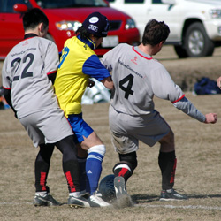
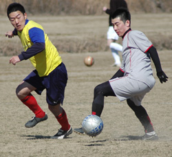

|
Misato Sunday 17th Feb,

With the Lions not playing until later in the day the opportunity to watch football of a calibre higher than that of the Champions League would have to wait. The man in the park walking his dog had to make do with a free-flowing, end-to-end, open game of football which was ultimately decided by the Barb's keeper uncharacteristically selling the farm (twice!) in the 2nd half.
It was a traditional start to the game for the Barbs with the ball coming back off the underside of their bar (honest) in the first 30 seconds. That would normally wake a team up, but the Barbs continued to make heavy weather of things and allowed the Maritizio number 10 to stroll through on goal and force the keeper to concede a penalty. Luckily the big number 10 was on Barbarian time and sclaffed his kick wide of the target. 0-0 when it could've been 2-0 saw the Barbs start to string a few moves together with good hold-up play from Gunning allowing his team-mates to get into some dangerous positions. A good save by the Barbs' keeper fending off 2 opoositon strikers in a feeding frenzy in the dirt saw confidence grow and the goal duly arrived a few minutes before half-time when Sami slotted home after good build-up play from Muramoto and Gunning.

The 2nd half saw Maritizio start the stronger with the wind at their backs, but again Barbs slowly got back into it and the game flowed from end to end. The equaliser came when a fairly innocuos looking shot from the edge of the box somehow squirmed through the keeper and agonisingly across the line. It looked like things were all set for a 1-1 draw, but the Barbs got a scare when the Maritizio number 10 (obviously having left his shooting boots at home) swiped fresh air with only the net to beat. Barbs could've knicked it when they hit the bar with 10 minutes to go, but the last laugh was on them when another shot from the edge of the box squirmed through the keeper and it ended 2-1 Maritizio despite a last minute Barb's corner.
Yet another season where winter kicks in and Barbs plummet down the table......Seasonal Affective Disorder anyone?
Report by Andrew Ferguson
|